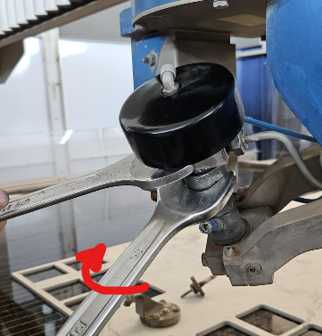
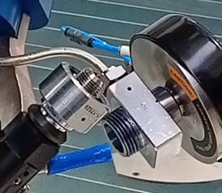
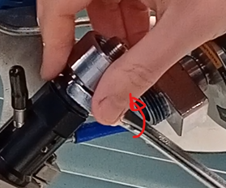
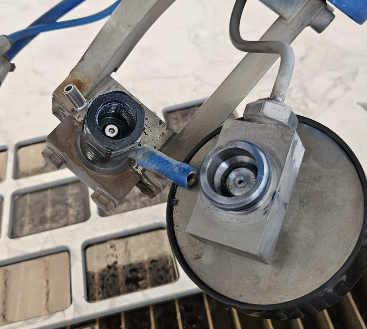
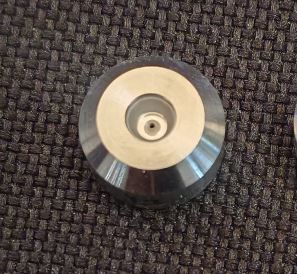
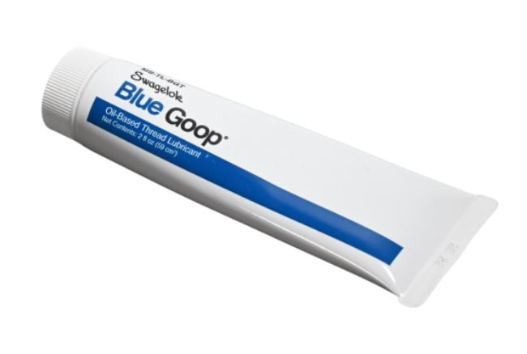

⚠️ Prima di procedere leggere attentamente le | |
⏲️ Intervallo: ogni 70 ore di lavoro | 🎚️ Complessità operazione: ⭐☆☆☆☆ |
🧑🏭 Figura autorizzata: Operatore macchina | 🧤 DPI previsti:  |
Allentare (NON STACCARE) il raccordo del tubo alta pressione

Tenendo fermo il corpo valvola svitare la ghiera sotto

Sganciare e spostare la valvola

Svitare il corpo di giunzione per poter accedere alla sede dell’orifizio



Aiutandosi con un tubetto, una pinza o altro rimuovere l’orifizio usurato

Inserire il nuovo orifizio nella sede verificando l’orientamento corretto (parte conica verso l’alto)

Pulire i diversi raccordi mettendo poi il lubrificante anti-grippaggio (Blue Goop) prima del fissaggio

Procedere con la sequenza inversa per il rimontaggio rispettando le coppie di serraggio

Documenti allegati